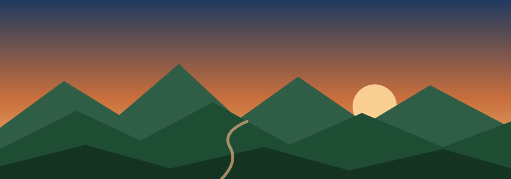

FUGA
La distancia mas corta y accesible, ideal para debutar en montana. Ver ficha completa.
Ir a la ficha →
Del Mediterraneo, en Castellon de la Plana, hasta el Santuario de Sant Joan de Penyagolosa.
Penyagolosa Trails es una de las carreras de montana mas veteranas de Espana: cada mes de abril une la ciudad de Castellon de la Plana, casi a nivel del mar, con el Santuario de Sant Joan de Penyagolosa, a 1.280 metros de altitud, atravesando localidades como Borriol, Vilafames o Les Useres. Esta pagina es una guia no oficial, hecha con fines academicos para la Tarea 2 (R.A. Intermedio) de la asignatura de Lenguaje de Marcas y Sistemas de Gestion de Informacion.
Dato de interes: la prueba reina, la MiM, recorre 60 km con mas de 3.300 m de desnivel positivo, mientras que la ultra CSP supera los 106 km y los 5.600 m de desnivel. Toda la informacion oficial y actualizada esta en penyagolosatrails.com .
La distancia mas corta y accesible, ideal para debutar en montana. Ver ficha completa.
Ir a la ficha →La prueba clasica: 60 km desde Castellon hasta el Santuario de Sant Joan.
Ir a la ficha →La ultra distancia, 106 km y mas de 5.600 m de desnivel positivo.
Ir a la ficha →Este sitio nace como practica de HTML y CSS. Es un proyecto de aficionado, no oficial y sin animo de lucro, pensado como si fuera una web de fans que quiere animar a mas corredores a conocer Penyagolosa Trails. Para inscripciones, normativa y horarios definitivos consulta siempre la web oficial de la organizacion.
↑ Volver al principio de la paginaAlgunos enlaces utiles para conocer mejor la prueba: